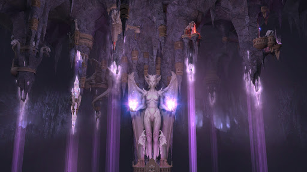

Miasto Sylvan
Motto: "Tańczymy w rytm otaczającej nas Natury"

Charakterystyka:
- Społeczeństwo: Mroczne Elfy
- Przypisane kolory: czarny i purpurowy
- Bóstwa:Malassa – Smok Ciemności, strażnik sekretów
- Filozofia: Rządzimy cieniami, a kiedyś cienie będą rządzić wszystkim
- Królestwo: Ygg – Chal, Głębia
- Stolica: Kanos, Labirynt Cieni
- Symbole: Wąż, Beznamiętna Maska
Opis:
Mroczne Elfy są renegatami z zamku Sylvan, którzy dawno temu zawarli pakt z tajemniczym Bezimiennym. W rezultacie Mroczne Elfy czczą Smoka Ciemności, strażnika sekretów. Społeczeństwo zamku Dungeon zbudowane jest wokół spisków, plotek, zdrad i okultyzmu. Każde poszczególne miasto rządzone jest przez klan, któremu przewodniczy Najwyższa Kapłanka. To właśnie kobiety w społeczeństwie Mrocznych Elfów są płcią dominującą we wszystkich aspektach: religijnym, politycznym i militarnym. Elfy nie wychowują dzieci, ale posyłają je do świątyą, gdzie od najmłodszych lat uczą się sztuki przetrwania. W czasach pokoju, Elfy z Głębi spiskują przeciwko sobie nawzajem, ale kiedy zbliża się wojna i czasy zawieruchy, wszystkie klany jednoczą się pod wspólnym sztandarem. Jednostki zamku Dungeon są bardzo uzdolnione i wytrzymałe, nawet te z niskich poziomów. Na nieszczęście dla Mrocznych Elfów, wszystkie oddziały są drogie, dlatego każda strata w szeregach jest dla nich bolesnym ciosem.
(RSS - Rok Siódmego Smoka)
Starożytność
528 RSS: Bunt Tuidhany
Tuidhana i jej zwolennicy deklarują niepodległość od Królestwa Elfów.
540 RSS: Wojna Gorzkich Popiołów – Narodziny Mrocznych Elfów
Elfy z Irollanu i Rycerze z Imperium Sokoła są w stanie wojny z Tuidhaną, a ich polem bitwy staje się królestwo Tuidhany. Pierwsze zaatakowało Imperium Sokoła, Thuidana zwróciła się o pomoc do Arniela, jednak on odpowiedział atakiem, sprzymierzając się z Imperium. Widząc, że jej terytorium jest atakowane z dwóch stron, Tuidhana zawiera pakt z jednym z ocalałych Bezimiennych, by zyskać moc do ochrony swych ludzi. Ci którzy za nią podążyli zostali obdarzeni błogosławieąstwem Malassy – Smoka Ciemności. Od tego dnia, będą oni znani jak Mroczne Elfy. Zyskując nową siłę Mroczne Elfy wypędzają Elfów i Rycerzy ze swoich ziem. Niełatwy pokój zostaje zawarty pomiędzy Elfami a ich Mrocznymi braćmi...
548 RSS: Pokój Nowej Wiosny
Imperium Sokoła zarzuciło jakiekolwiek plany co do ziem Mrocznych Elfów i zajęło się lizaniem ran. Tymczasem królestwo Mrocznych Elfów rośnie w siłę i jest coraz bardziej zauważane i coraz częściej mają miejsce walki na granicach z Imperium Sokoła i Elfami z Irollanu.
566 RSS: Dzieą Ognistych Łez – Śmierć Tuidhany
Potworny ogieą trawi stolicę Elfów. Wysoki Król ginie wraz ze swą rodziną, przeżywa tylko jego syn Vaniel, ginie również Brythigga – Matka Drzew, poświęcona Elfom. Straty są niewyobrażalne. Mroczne Elfy zostają obwinione o to, co się stało. Mają do wyboru wygnanie lub śmierć w osłabionych wojną ziemiach. Większość uciekła, reszta została wytropiona i zabita przez Elfów. Tuidhana została na swej ziemi i ginie wraz z Mrocznymi Elfami, broniąc się do ostatniej kropli krwi.
585 RSS: Odkrycie Spisku Demonów w Dniu Ognistych Łez
Smoczy Jeźdźcy przynoszą dowód, na to, że Dzieą Ognistych Łez został wywołany przez szpiega Demonów. Elfy rozumiejąc swój straszliwy błąd, wysyłają emisariuszy do Mrocznych Elfów oferując amnestię i powrót do ojczystych ziem Mrocznych Elfów. Oferta zostaje odrzucona.